函数
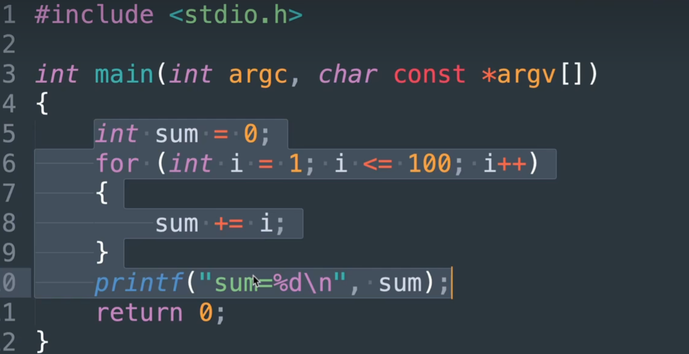
这是一段求和的代码 那么我的程序中需要用很多次这个求和过程，就需要每次都写一遍
所以用函数我们就可以简化这个过程，将我们的过程封装成函数，每次调用只要写函数名即可
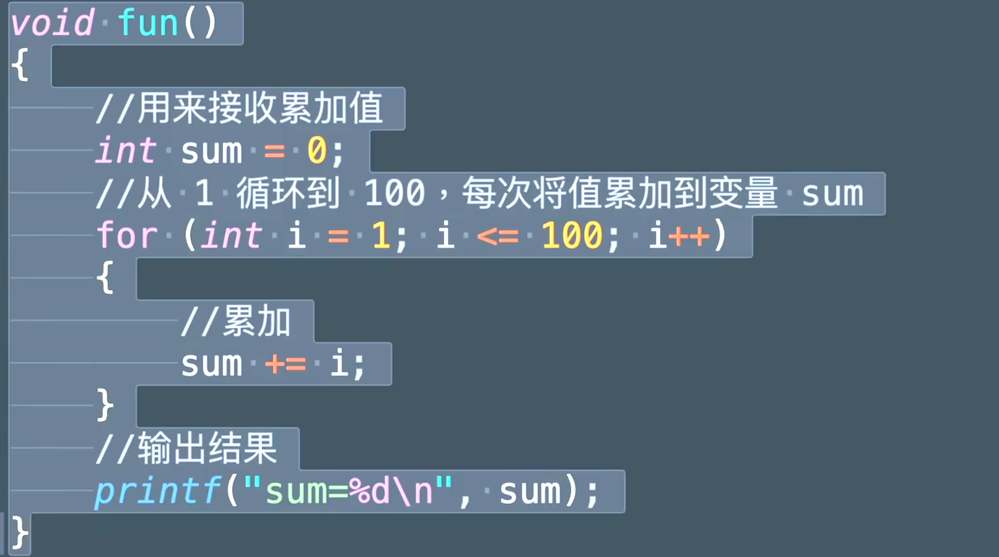
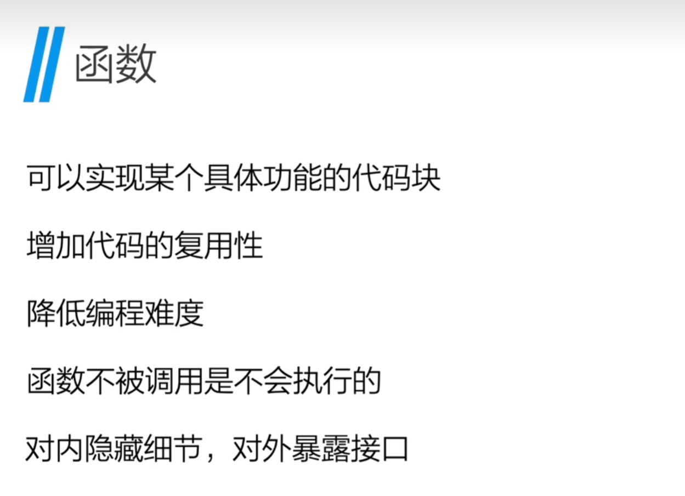
对内隐藏细节 对外暴露接口
函数的基本声明结构
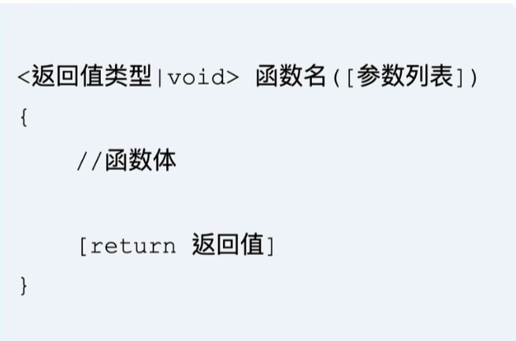
拓展一下几类函数 对应的不同就是 参数 和 返回值
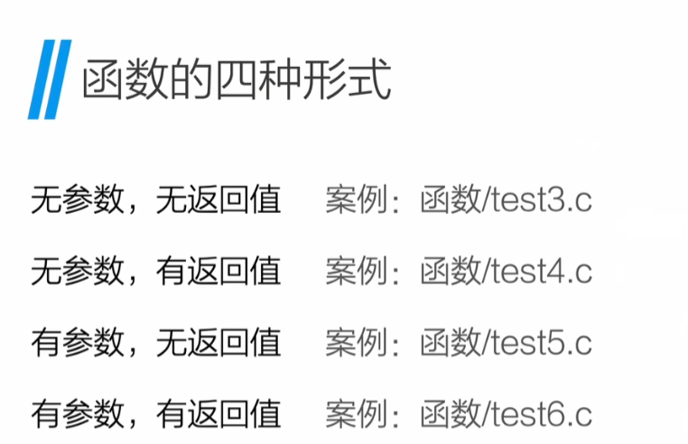
先总结 无返回值用void 有返回值用int
1.无返回值 无参数
//无返回值 无参数
#include <stdio.h>
void fun(){
int sum = 0;
for(int i=0;i<=100;i++){
sum += i;//leijia
}
printf("sum=%d\n",sum);
}
int main()
{
fun();
return 0;
}
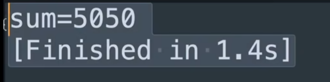
2.有返回值 无参数
注意 ：返回值返回到哪里？ 哪里调用就返回到哪里
#include <stdio.h>
int fun()
{ int sum = 0;
for(int i = 0; i<=100; i++)
{
sum += i;
}
return sum;
}
int main()
{
int s = fun();
printf("s=%d\n",s);
return 0;
}
3.需要参数 无返回值
//有参数 无返回值
#include <stdio.h>
void fun(int n)
{
int sum ;
for(int i = 0; i<=n ; i++ )
{
sum += i;
}
printf("sum = %d\n",sum);
}
int main()
{
fun(100);
return 0;
}
4.有返回值有参数
//有参数 有返回值、
#include <stdio.h>
int fun(int n)
{
int sum = 0;
for(int i = 0;i <= n; i++ )
{
sum += i;
}
return sum ;
}
int main ()
{
int s = 0;
s = fun(100) ;
return 0;
}
字符串
通常是用数组表示字符串
将字符串直接声明给数组
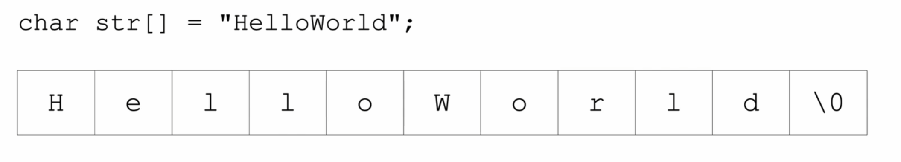
注意：数组不能被赋值
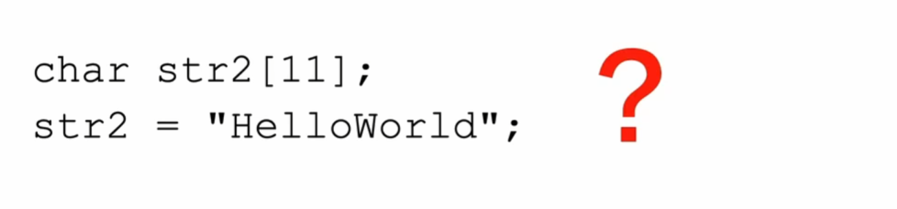
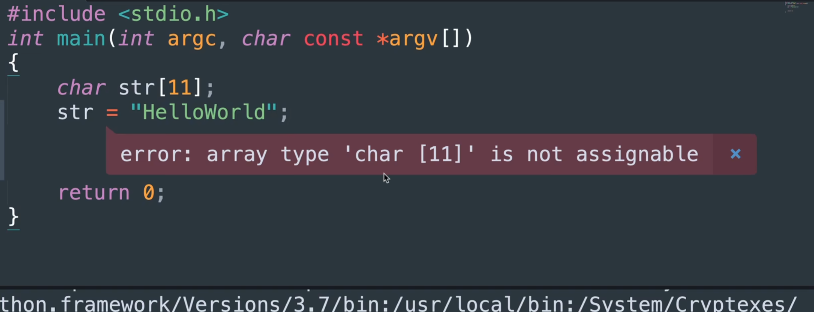
那么如何正确赋值呢 要引入新的C语言头文件库 <string.h>
<string.h>（strcpy）
这个文件库中有一个函数可以对字符型数组赋值
#include <stdio.h>
#include <string.h>
int main ()
{ char str1[11];
strcpy(str1,"helloworld");
printf("str1 =%s",str1);
return 0;
}
内存
冯诺依曼体系的计算机基本结构
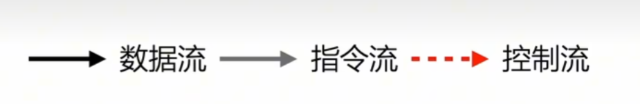
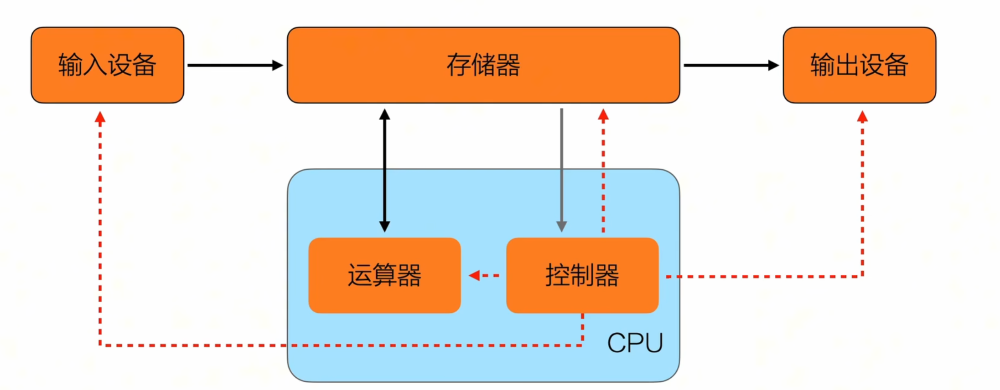
存储器严格意义上可分为两部分
拆分开也可得到我们所认识的外设、主机

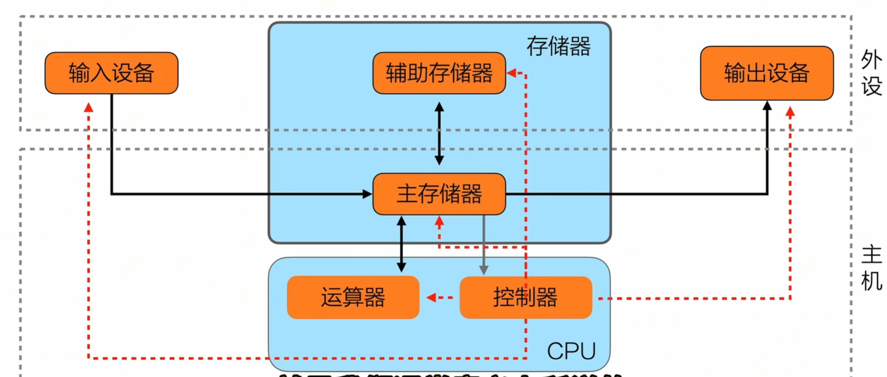
注：主存储器就是常说的内存条· 辅助存储器就是硬盘
扩展一下硬盘与内存条的区别 :
硬盘就是用来存储数据的，例如电脑上存的各种word文档等各种文件
而我们打开word码码字 点开播放器播放音频视频 这种ing的东西都是跑在内存上的
虚拟内存地址
而内存条 显卡 各种适配卡都有自己的储存地址空间
而我们的操作系统就将这些设备的储存地址空间抽象为巨大的一维数组 对于内存中的每一个字节都会分配编号 （编号）即为内存地址。
例如：某硬件有4G的自带内存，
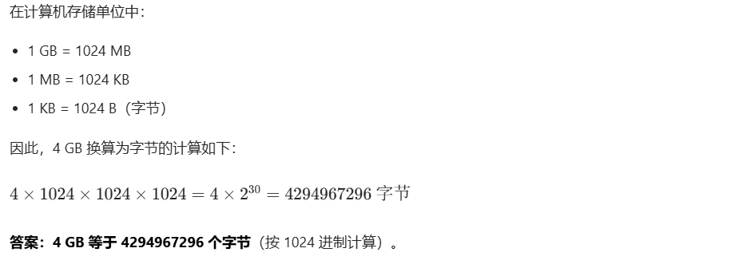
其中·4294967296个字节都会被安排一个32位or64位的编号。
而我们的个人电脑中 通常都是看到由十六进制表示的
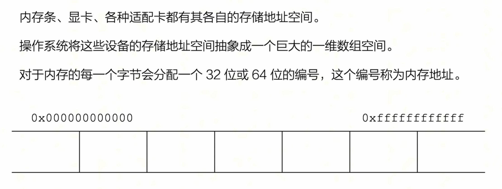
如果不太理解可以结合AI理解
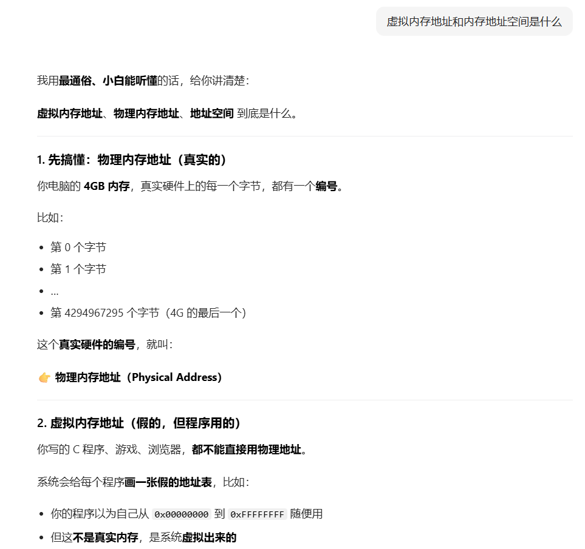
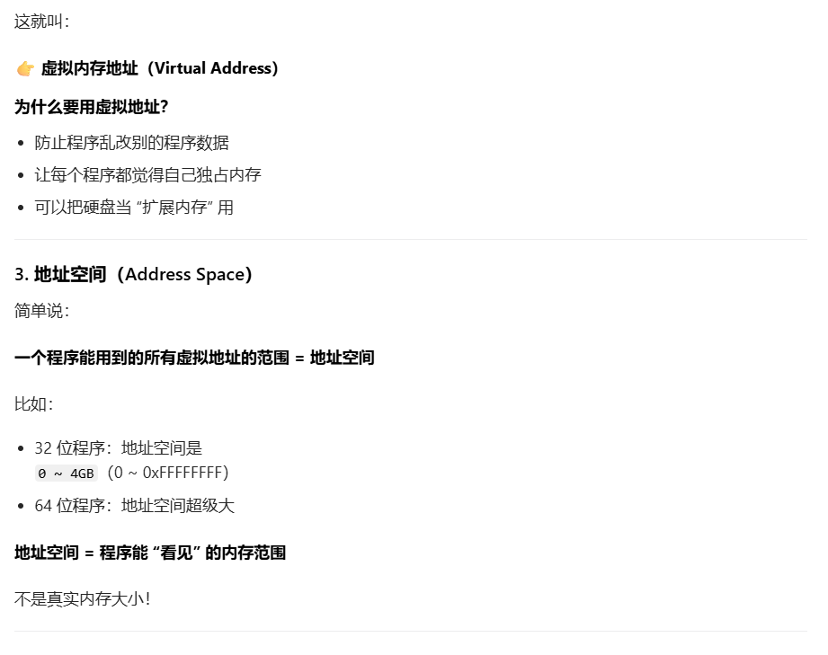
然后我们用简单的一个代码演示一下 （为了方便 将内存地址用十进制表示）
int main()
{ int a = 5;
int b = 10;
retrun 1;
}
内存中就是如图
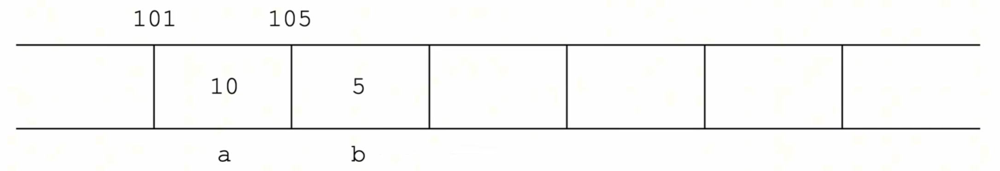
question：为什么101过了就是105？ 因为int类型在内存中占4个字节
数组
1.相同数据类型的集合 2.数组的长度定义后不得改变
3.数组中的每一个元素可以用下标表示位置.........
举例：
int main()
{
int a[] = {16,47,89,42,38};
for (int i = 0;i < 5;i++)
{
printf("%d\n",a[i]); //遍历数组
}
return 0;
}
内存图
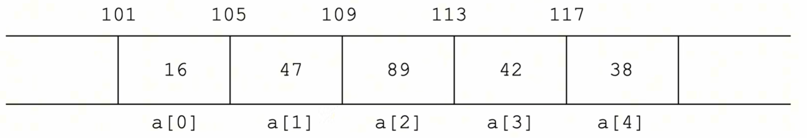
取地址（&）
之前的学习中我们学过一个函数scanf（）而函数中有个&的符号就是取地址符。
#include <stdio.h>
int main()
{ int a = 5;
int b = 10;
printf("%p\n",&a);
printf("%p\n",&b);
return 0;
}
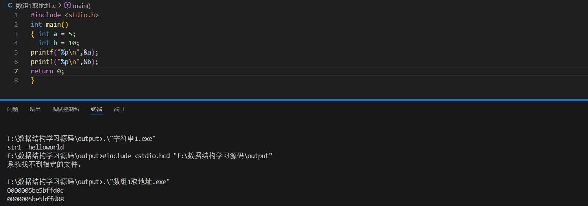
如果你直接取一个数组的地址 eg：
int a[] = (16,47,89,42,38);
printf("%p\n",&a);
printf("%p\n,&a[0]";)
给你的都是数组的首地址（第0个元素的地址）
函数sizeof（）
#include <stdio.h>
int main()
{ int a = 5;
printf("%zu\n",sizeof(a));
printf("%zu\n",sizeof(int));
printf("%zu\n",sizeof(3.14));
return 0;
}
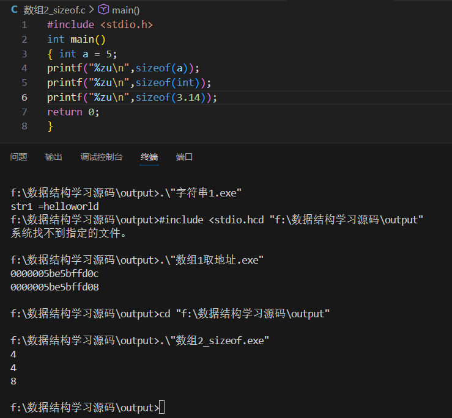
所以sizeof就是返回参数在内存中所占用的字节数
而当我们遍历一个数组却不知道数组的真正长度...............
#include <stdio.h>
int main()
{int a[] ={16,47,89,42,38};
for(int i = 0;sizeof(a)/sizeof(a[0];i++)
{
printf("%d\n",a[i]);
}
printf("%zu\n",sizeof(a));
printf("%zu\n",sizeof(a[0]));
return 0;
}
指针 (存放内存地址的变量)
（相当于也是一种变量 但是其中存放的是地址）
指针的声明
int a ; //生命一个整形变量
int *p; //声明一个指针变量，该指针指向一个int类型值的内存地址(可以把指向理解为存储)
#include <stdio.h>
int main()
{
int a ;
int *p ;
a = 5;
p = &a;
return 0;
}
内存中的排布
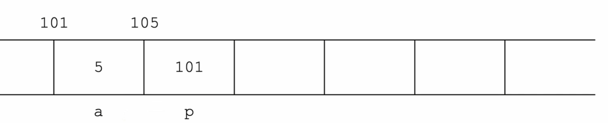
我们来验证一下
#include <stdio.h>
int main()
{
int a = 5;
int *p ;
p = &a;
printf("a的地址为%p,a的值为%d\n",&a,a);
printf("p的地址为%p,p的值为%p\n",&p,p)
return 0;
}
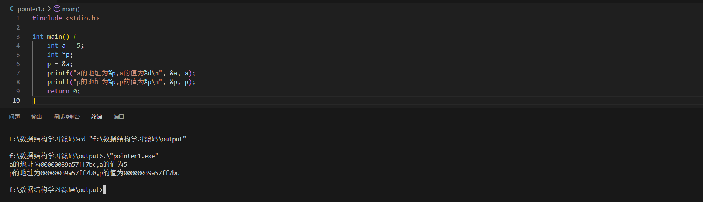
知道这个我们可以做的事情就很多了
间接引用操作符*（解引用指针）非声明变量条件下
#include <stdio.h>
int main() {
int a = 5;
int *p;
p = &a;
printf("%d\n",*p);
*p = 100;
printf("%d\n",a);
return 0;
}
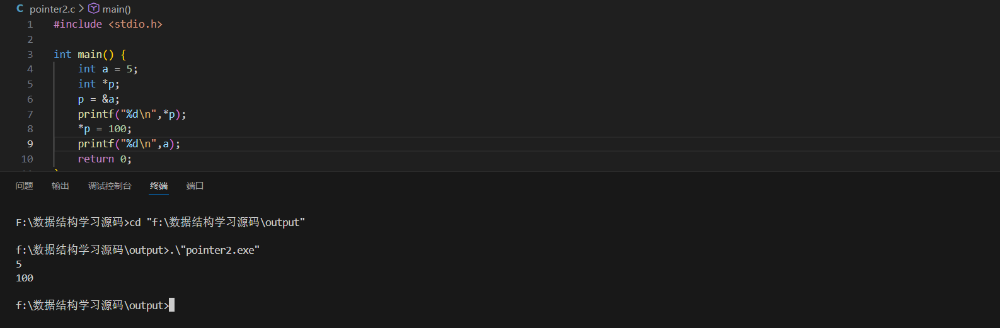
主要理解第三行代码（这也是为什么叫做指针的原因）
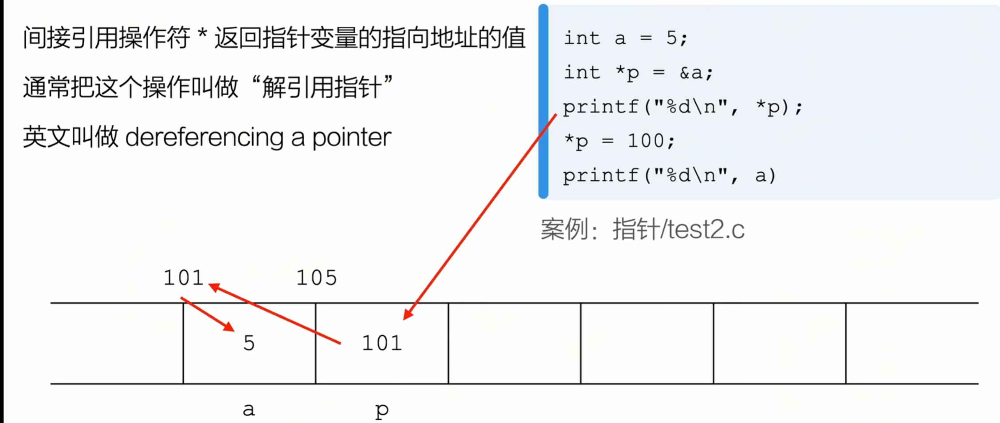
形参、实参
我们之前学过了函数 可以通过函数来实现两个值的互换
#include <stdio.h>
void swap(int a, int b )
{
int temp;
temp = a;
a = b;
b = temp;
printf("a=%d , b=%d\n",a,b);
}
int main ()
{
int m = 5;
int n = 10;
swap(m , n);
printf("m=%d,n=%d\n",m,n);
}
这里就有两个输出 第一个是swap函数中的输出 第二个是main函数中的输出。
第一行输出的是a= 10 b= 5
而关键在于第二行的输出m和n的值有没有交换？答案是没有交换的。
AI的回答：
- 核心原因：值传递（pass by value）
- 当你调用
swap(m, n)时，C 语言会把m和n的值（5 和 10）复制一份，传给swap函数的形参a和b。 swap函数里交换的是这两个副本a和b，和原来的m、n没有任何关系。- 所以
swap里的a和b确实交换了，但main里的m和n还是原来的值。
---
- 代码执行过程
main中：m = 5,n = 10- 调用
swap(m, n)：
- 生成副本：
a = 5,b = 10 - 交换
a和b：a = 10,b = 5 - 打印：
a=10, b=5
- 回到
main：
m和n还是原来的 5 和 10- 打印：
m=5, n=10
所以这里只是将mn的值作为副本传入函数，而如何将 m n的值真正实现互换呢？ 需要用到指针
上面我们可以明白真正的值都是通过地址标注好的，所以我们可以通过指针来调换他们的实参。
#include <stdio.h>
void swap(int *a, int *b )
{
int temp;
temp = *a;
*a = *b;
*b = temp;
printf("a=%d , b=%d\n",*a,*b);
}
int main ()
{
int m = 5 ;
int n = 10;
swap(&m , &n );
printf("m =%d ,n = %d\n ", m,n );
return 0;
}
这样输出出来改变的就是实参。
自己对比一下吧 有什么疑问问ai或者博主本人。
//只改变形参
#include <stdio.h>
void swap(int a, int b )
{
int temp;
temp = a;
a = b;
b = temp;
printf("a=%d , b=%d\n",a,b);
}
int main ()
{
int m = 5;
int n = 10;
swap(m , n);
printf("m=%d,n=%d\n",m,n);
}
//改变实参
#include <stdio.h>
void swap(int a, int b )
{
int temp;
temp = *a;
a = b;
*b = temp;
printf("a=%d , b=%d\n",a,b);
}
int main ()
{
int m = 5 ;
int n = 10;
swap(&m , &n );
printf("m =%d ,n = %d\n ", m,n );
return 0;
}
指针与数组
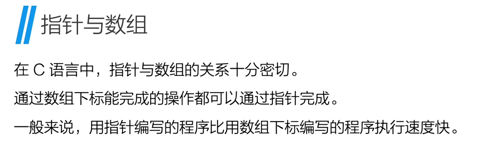
#include <stdio.h>
int main(int argc, char const *argv[])
{
int a[] = {15,22,76,43,87};//声明数组
int *p; //声明指针
p = a; //将数组首地址给指针
printf("%p\n",a);
printf("%p\n",p);
printf("%d\n",*p);
return 0;
}
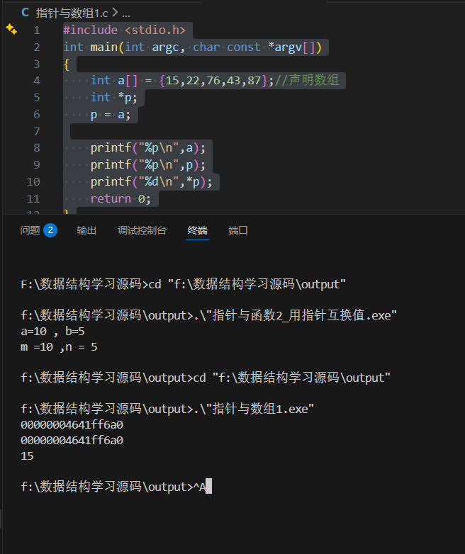
用指针遍历数组（其实也可以用p[i]）
#include <stdio.h>
int main()
{
int a[] = {15,22,76,43,87}; // 声明数组
int *p;
p = a;
// 1. 下标法遍历
for (int i = 0; i < sizeof(a) / sizeof(a[0]); i++)
{
printf("%d\n", a[i]);
}
// 2. 指针法遍历
for (int i = 0; i < sizeof(a) / sizeof(a[0]); i++)
{
printf("%d\n", *(p + i));
}
return 0;
}
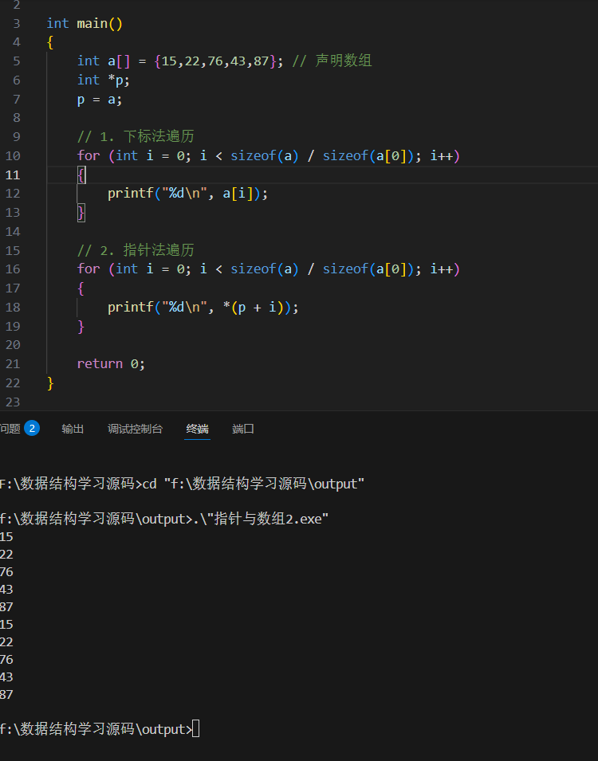
question： 为什么是p+i?那岂不是是一个一个的加 ，但是我们的int类型地址是4个为一组的。
指针的算数运算
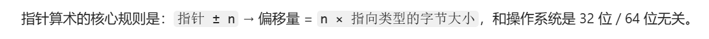
所以当声明了指针的数据类型 例如
int *p(可以自己给p一个值run一下)
printf("%p\n",p);
p++;
printf("%p\n",p);
这个东西也可以说是“步长”这个概念
各个数据类型的字节数
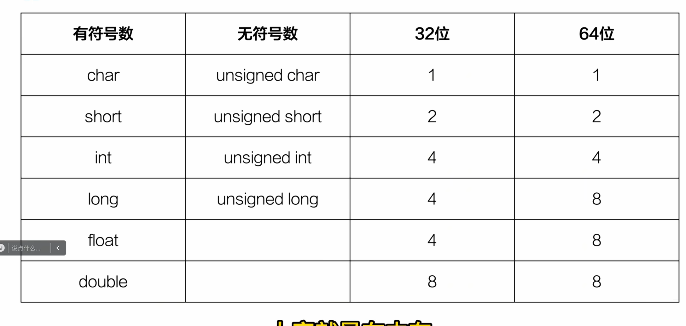
结构体
本质上讲，结构体也是一种数据类型
结构体的本质是各种变量的集合
声明
用坐标轴表示一个点
#include <stdio.h>
struct point //创建一个名为point的结构体
{
int x;
int y;
};
现在就已经有一个叫做point的数据类型
结构体的初始化、调用
// 1. 先定义结构体类型
struct point {
int x;
int y;
};
// 2. 声明结构体变量
struct point p; // struct + 结构体名 + 变量名
// 3. 给变量赋值
p.x = 10;
p.y = 15;
struct point：整体是一个类型，就像int一样。p：是这个类型的一个变量，就像int a;里的a一样。- 访问成员时用
.：p.x表示变量p里的x成员，p.y表示变量p里的y成员。
---
实例
先分析 需要编写函数 函数有参数有返回值 还需要一个结构体来接住函数的参数x、y 最后返回的是结构体。
#include <stdio.h>
// 1. 先定义结构体类型
struct point {
int x;
int y;
};
struct point C_Point( int x ,int y) //创建point类型的函数C_Point
{
struct point temp;//在函数内创建结构体变量接住参数并返回
temp.x = x;
temp.y = y;
return temp;
}
int main ()
{
struct point p ;//函数返回的结构体 我们就需要创建新的结构体变量来接住
p = C_Point(5,10);
printf("%d\n",p.x);
printf("%d\n",p.y);
return 0;
}
这个程序是有点脱裤子放屁的，在main中已经创建了一个结构体p了 何必要在函数中再搞个·temp
而真实的用法中，我们不会通过结构体来传递 而是直接通过结构体的地址来进行值传递
结构体与指针
声明
struct point *pp；
//写法一
(*pp).x = 10;
(*pp).y = 5;
\\写法二
pp->x = 10;
pp->y = 5;
#include <stdio.h>
struct point
{
int x;
int y;
};
int main()
{
struct point p;
p.x = 5 ;
p.y = 10;
struct point *pp;
pp = &p;
pp->x =10;
pp->y = 5;
}
//在打印后两个xy都是10 5 通过指针用内存直接改掉实参 而如果用函数来进行值传递 p中的x y是不变的
再例如熟悉的学生系统 只需要将结构体内的int类型改成命名的数组 然后通过之前的string.h头文件来对数组赋值：
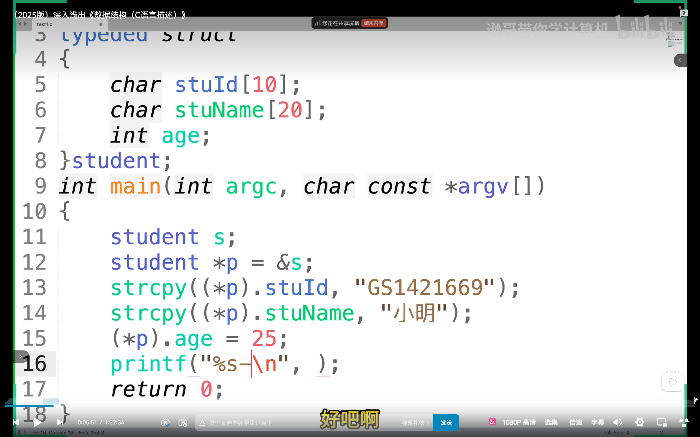
对于用函数和指针的区别 函数实际就是将我们需要传递的数据copy一个副本 用副本来传递值 所以不会改变原始数据。而指针直接通过地址的调用改变原始值进行取值
类型定义
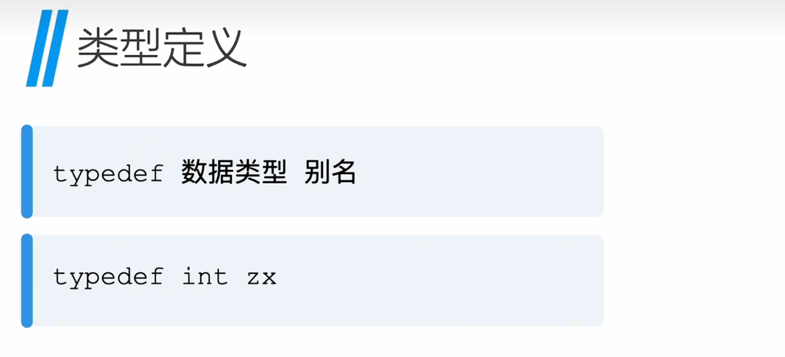
具体用法就是自定义了变量名字
我们通常给变量赋值都是
int a = 5;
int b = 10;
而通过typedef
typedef int myType1;
typedef char myType2;
int main()
{
myType1 a = 5;
myType2 b = 10;
}
这个东西有啥子作用呢 如果一个程序片段中的所有int类型我们需要改成其他类型 倘若在编写程序的过程中，我们把int 通过typedef改成我们自定义的类型名称 ，就只需要在定义类型名称的地方进行更改即可。
还有的用法就是
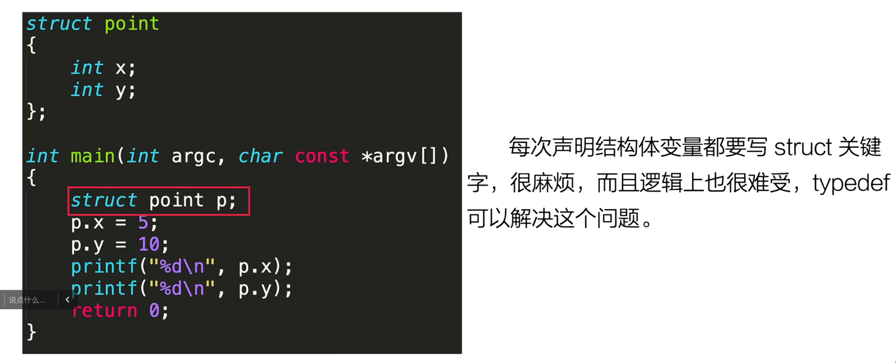
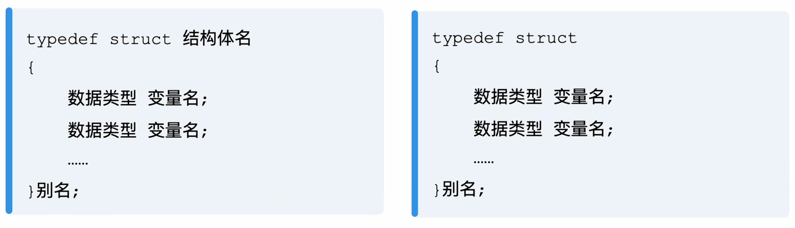
typedef struct point
{
int x ;
int y ;
}po;
typedef struct
{
int x ;
int y ;
}po;
#include <stdio.h>
typedef struct
{
int x;
int y;
}po;
int main(int argc, char const *argv[])
{
po p;
p.x = 5;
p.y = 10;
printf("%d\n",p.x);
printf("%d\n",p.y);
return 0;
}
之后我们想要使用结构体不需要给结构体命名 直接用typedef给结构体一个别名即可 也省了总是写struct的时间。
内存分类
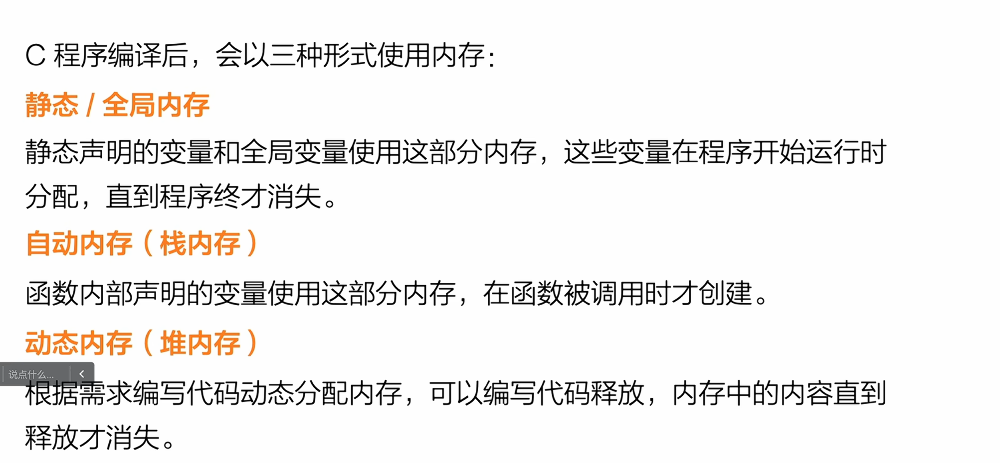
注：自动内存（栈）的分配逻辑是不受人为掌控的，根据我们的程序机器直接分配。
而动态内存（堆）是编写过程中人为可以控制分配空间的。
栈内存（自动内存）由编译器 / 操作系统自动分配和释放，分配规则、大小、生命周期完全由程序的执行流程（比如函数调用、变量作用域）决定，程序员无法手动干预；堆内存（动态内存）由程序员手动调用函数（如 C 语言的 malloc/free、C++ 的 new/delete） 分配和释放，分配的大小、时机、释放时机完全由程序员控制。
动态内存分配（malloc）
1.c语言中 使用malloc函数分配内存：
void* malloc (size_t)// void*表示通用数据类型的指针（各种数据类型的通用）
sizeof函数的返回值类型size_t
如果成功 会返回从堆内存上分配的内存指针
（为什么返回指针呢？例如你需要让他动态分配某个字节的量来盖房子，房子盖成功了就把房子的地址告诉你）
如果失败 返回空指针（null）
2.使用分配的内存（房子盖好了就开始使用了）
3.（使用完毕）使用free函数释放内存
#include <stdio.h>
#include <stdlib.h>
int main(int argc, char const *argv[])
{
int *p;
p = (int*)malloc(sizeof(int));//p指向这块新开辟的内存地址
*p = 15;
printf("%d\n",*p);
free(p);
return 0;
}
内存图
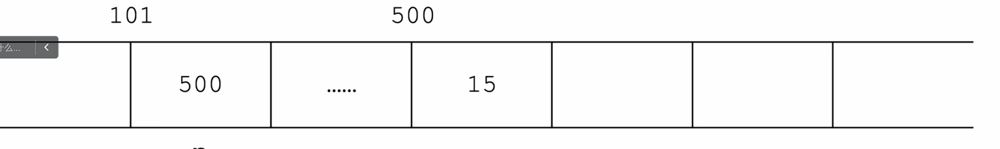
---
动态分配 指针、数组
#include <stdio.h>
#include <stdlib.h> //mallco的标准库
#include <string.h>
int main(int argc, char const *argv[])
{
char *s;//声明char类型指针
s = (char*)malloc(10);//开辟10字节的空间，char*强转换为字符型
strcpy(s, "Hello"); //通过strcpy函数传入值
printf("%s\n", s);
return 0;
}
---
#include <stdio.h>
#include <stdlib.h>
int main(int argc, char const *argv[])
{
int *arr = (int*)malloc(5 * sizeof(int));
for (int i = 0; i < 5; i++)
{
arr[i] = 0;
}
for (int i = 0; i < 5; i++)
{
printf("%d\n", arr[i]);
}
return 0;
}
---
内存分配与结构体
#include <stdio.h>
#include <stdlib.h>
typedef struct{
int x;
int y;
}po; //创建结构体po
int main(int argc, char const *argv[])
{
po *p; //声明结构体po类型的指针p
p =(po*)mallco(sizeof(po)); //动态分配内存
p->x = 5; //(*p.x=5)
p->y = 10; //(*p.y=10)
//printf...........
return 0;
}
此时结构体在内存中占用8字节
深入细节： 如果我换成 char x； int y ； 那么又该占有几个字节呢？ 可能会觉得是 1+4 = 5
但是答案还是 8个字节。
这是因为 C 语言中结构体存在 内存对齐（Memory Alignment） 规则，编译器会自动在成员之间插入填充字节（Padding），以满足 CPU 对数据访问效率的要求。
- 原始结构体：
int x; int y;
int类型通常占用 4 字节，并要求 4 字节对齐。- 结构体大小计算：
x：4 字节y：4 字节- 总大小：
4 + 4 = 8字节，刚好满足对齐要求，无需填充。
- 修改后结构体：
char x; int y;
char类型占用 1 字节，要求 1 字节对齐。int类型占用 4 字节，要求 4 字节对齐。- 为了让
int y满足 4 字节对齐的要求，编译器会在char x后面插入 3 字节的填充，使y的起始地址是 4 的倍数。 - 结构体大小计算：
x：1 字节- 填充：3 字节
y：4 字节- 总大小：
1 + 3 + 4 = 8字节。 - 同时，整个结构体的大小必须是其最大对齐成员（
int，4 字节）的整数倍，8 字节满足此条件。